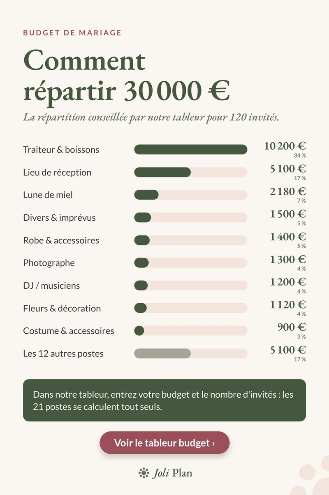

Budget de mariage
Budget mariage 30 000 € pour 120 invités : poste par poste
Mis à jour le 25/10/2026
Avec 30 000 € et 120 invités, on arrive à 250 € par invité. Voici la répartition conseillée par notre tableur pour ce scénario. Ce sont des repères, pas des prix réels : vos devis ont le dernier mot.
Voir l'organisateur de mariage sur Etsy ›

Le détail des 30 000 €
| Poste | Montant | Part |
|---|---|---|
| Traiteur & boissons | 10 200 € | 34 % |
| Lieu de réception | 5 100 € | 17 % |
| Lune de miel | 2 180 € | 7 % |
| Divers & imprévus | 1 500 € | 5 % |
| Robe & accessoires | 1 400 € | 5 % |
| Photographe | 1 300 € | 4 % |
| DJ / musiciens | 1 200 € | 4 % |
| Fleurs & décoration | 1 120 € | 4 % |
| Costume & accessoires | 900 € | 3 % |
| Les 12 autres postes | 5 100 € | 17 % |
Ce qui change avec ce budget
À 30 000 €, la lune de miel entre dans la répartition avec 2 180 €, soit la troisième ligne la plus élevée. La part du traiteur est un peu plus basse que dans notre exemple à 20 000 € (34 % contre 37 %).
Le traiteur coûte ici 85 € par invité (10 200 € pour 120), et le lieu 5 100 €. Ensemble, ils font 15 300 €, soit environ 51 % du budget.
Par où commencer
- Demandez les devis du lieu et du traiteur en premier : ce sont 51 % du total.
- Gardez les 1 500 € d'imprévus (5 %) pour les petits oublis.
- Repérez les 12 autres postes (5 100 €) : papeterie, transport, hébergement, matériel… ils s'additionnent vite.
Questions fréquentes
Quel budget pour un mariage de 120 invités ?
Notre exemple part de 30 000 €, soit 250 € par invité. Ajustez ensuite chaque poste avec vos devis.
Que devient la lune de miel dans ce budget ?
Dans cet exemple, elle reçoit 2 180 €, soit environ 7 % : c'est la troisième ligne la plus élevée.